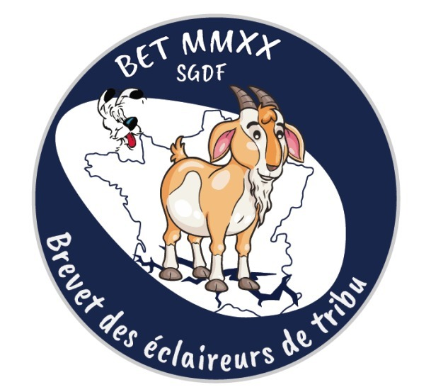

<div class="container">
    <div class="jumbotron">
        <center>
            <h1>Panoramix est en danger!</h1>
            <h2>Une aventure dont VOUS êtes le héros!</h2>
            <!--  -->
		<p> Tu lui proposes finalement de venir avec toi, lui racontant ta route, mais tu ne comprends pas d'où il vient. Difficile d'aider dans ce cas-là, te dis-tu. Il ne parle que par des descriptions de paysages, un champ, un arbre, le paysan d'à côté. Comment ferais-tu pour le ramener chez lui, impossible de te faire passer pour son percepteur, les romains prenaient rarement des gaulois pour élever leurs enfants, et puis... tu avais une mission à accomplir. C'était une décision étrange à prendre, l'abandonner à son sort ou tenter de le ramener en provoquant possiblement un quiproquo avec les romains que tu croiserais Toutefois, tu lui tendis la main et il te la prit pour marcher avec toi. Il te fallut longtemps pour comprendre d'où il venait. …............... (nom romain que tu as inventé) posait beaucoup de questions, mais ne semblait jamais entendre les tiennes. C'est grâce à quelques mots prononcés au hasard, que tu compris. Heureusement surtout que tu comprenais les animaux. A certains endroits, les oiseaux ne s'enfuyaient pas en voyant l'enfant, signe qu'ils l'avaient déjà croisé dans la journée un peu plus tôt. En temps que druide, tu savais lire ce genre de subtilités. Peu à peu, l'enfant reconnut une rivière, et vous la suiviez jusqu'à son domicile, une villa romaine en pierre trônant autour de champs selon ses dires... probablement volés aux anciennes tribus gauloises qui vivaient là, voilà à peine une dizaine d'années. Le paradoxe te travaillait, d'un côté leurs méfaits, de l'autre la bonté qu'ils pouvaient faire naître, en la personne de cet enfant. « Et ça, qu'est-ce que c'est que cette chose-là ? » demanda-t-il en tapotant ton bâton de druide. Tu étais fier de lui apprendre ce que c'était un druide. « Mais alors, tu es gaulois ? » s'étonna l'enfant en ouvrant grands les yeux. « Eh oui, tu ne sais pas reconnaître un gaulois d'un romain ? J'ai des cheveux très longs [et une moustache si tu es un homme] et des bracelets celtes, regarde ». Il fut dubitatif mais accepta de toucher tes bracelets, les faisant s'entrechoquer pour faire de la musique... Alors que vous tourniez au coin d'un méandre plein de vie, arbres, bosquets, plantes, oiseaux, cervidés... Une grosse voix cria quelque chose, peut-être le nom de l'enfant ? Tu ne l'entendis pas parfaitement. </p>      
		</center>
        <center>
            <a class="btn btn-primary" style="width:30%" href="/aventure/21" role="button">Tu pousses l'enfant dans les fourrés pour vous cacher</a>
            <a class="btn btn-primary" style="width:30%" href="/aventure/15" role="button">Tu restes sur la berge en marchant tranquillement vers la voix pour la saluer</a>
        </center>
    </div>
</div>